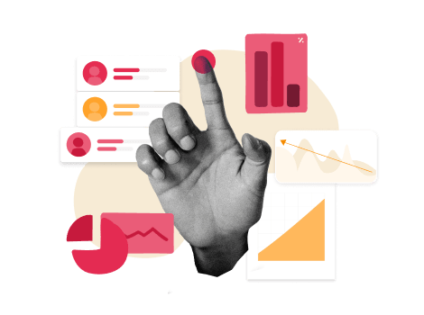
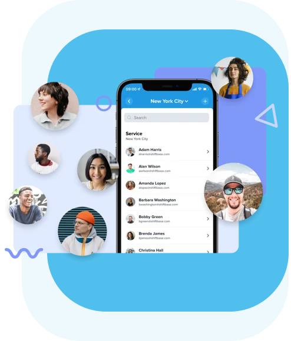
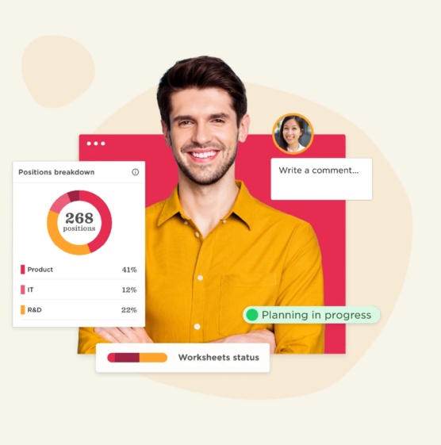

Global recruitment landscape is disrupting with every advancing year, and 2024 is anticipated to bring more to this trajectory.
With more job options available and numerous job search tools cropping up, job searchers have started dominating the overall employee-hiring scenario. To pace-up with this fast altering recruitment market, worldwide hiring managers are aggressively adapting to automation and Artificial Intelligence (AI) capabilities as their hiring strategies.
Brainmeasures experts have brainstormed key talent acquisition strategies for 2024 that can assist the Human Resource (HR) teams to attain and retain appropriate caliber for their diverse departments.
Quicker the Better!
Global recruiters are steadily looking out for ways to fasten their respective recruitment mechanisms to ensure that interviews scheduled, offers rolled out, and desired skills hired on-time
According to Brainmeasures’ analysts, in a typical business scenario, closing an entry-level position takes one to two weeks while mid to senior level positions require at least one to two months. The average time mentioned here to close hiring is quite logical to meet the desired workforce standards that recruiters need to adhere. Closing a vacancy in such a long time, however, not only impact the recruitment budgets but also lead to hiring sub-standard candidates.
Brainmeasures analysts, therefore, suggest that improving the speed and quality hiring process will be one of the major priorities for recruiters in 2024 and beyond.Developers @ Brainmeasures have come up with advanced ideas for a seamless recruiting experience through its future-ready online skill-assessment solutions, including skill-testing, coding problems, and various others
Brand Value Adds Value!
Establishing a strong brand value is another strategy that employers should keep on the cards to acquire the best talent in 2024 and beyond. Enterprises are striving to strengthen their brand value and enhance employee engagements by creating a better workplace through strategically dispersed HR budgets.
Webb 9 analysts suggest that recruitment teams should boast about their employee-friendly policies, lucrative employee benefits, and most prominently they should talk about their dynamic work environment. According to Brainmeasures analysis, nearly 80% of candidates consider employers branding before joining and therefore recommend, recruiters should briefly share relevant policies and benefits with job searchers during the interview rounds itself.

Smart online employee-testing solutions by Brainmeasures, enable global enterprises to propel their branding initiatives and ensure they hire as well as retain quality talent while supporting them to close multiple job positions on auto-pilot mode through referrals.
Un-Complicate the Complicate!
Streamlining the overall recruitment process is the next best initiative HR managers should consider to outshine as a preferred employer and to appoint the best caliber in 2024 and years to come.
Proactive Approach Helps!
Instead of chasing potential candidates, recruiters should proactively start building a candidates’ pipeline as a ready-reckoner to effectively fulfilling the talent requisitions in 2024 and beyond. Essentially, candidates’ pipeline is a repository that contains relevant information about the potential candidates who approached directly, through referral, or from other resources. The compiled information of prospective employees enables recruiters to instantly start interviewing candidates, for any existing vacancy or new opportunities, without floating a new requisition or waiting for resumes to drop-in.
Technology experts @ Brainmeasures always keep a proactive approach by consistently monitoring and analyzing the current technology trends to further improvise their online skill-testing solutions.
Strategizing Niche Hiring
Hereafter in 2024 and coming years, recruiters must closely identify the core expertise instrumental to the organizations’ growth and should alter their recruiting strategies to acquire these skills on priority. At-times, hiring niche caliber can be a cumbersome affair, however, if managed tactfully, the approach can assure recruiting teams that the top-most requisitions get the priority they deserve and all dilutions in the hiring process were mitigated while empowering HR managers to save on pre-screening time.
Brainmeasures internal research validates that about 54% of global organizations are planning to focus more on niche hiring through social media, customized job descriptions, and various other modes during 2024.
Experts @ Brainmeasures have aesthetically structured numerous skill-testing solutions to precisely meet the diverse recruitment needs of employers while emphasizing more on cognitive and psychometric assessments.
Strategizing Niche Hiring
Hereafter in 2024 and coming years, recruiters must closely identify the core expertise instrumental to the organizations’ growth and should alter their recruiting strategies to acquire these skills on priority. At-times, hiring niche caliber can be a cumbersome affair, however, if managed tactfully, the approach can assure recruiting teams that the top-most requisitions get the priority they deserve and all dilutions in the hiring process were mitigated while empowering HR managers to save on pre-screening time.
Brainmeasures internal research validates that about 54% of global organizations are planning to focus more on niche hiring through social media, customized job descriptions, and various other modes during 2024.
Experts @ Brainmeasures have aesthetically structured numerous skill-testing solutions to precisely meet the diverse recruitment needs of employers while emphasizing more on cognitive and psychometric assessments.

Quick Insights
To jumpstart with a positive note and execute talent acquisition plans in the right way, Brainmeasures experts suggest quick insights for recruiters to stay successful in 2024 and beyond.
We suggest that organizations should first analyze their current recruitment processes and figure-out the hiring channels (sourcing, screening, and others) that are performing as intended and those also that need a quick-fix. HR managers must also identify the activities that are fast exhausting their recruitment budgets and accordingly implement smart controlling measures.
While all these quick insights can enable recruiters to devise their hiring battles for 2024 and coming years, they must also leverage information technology to make well-informed talent acquisition decisions.
